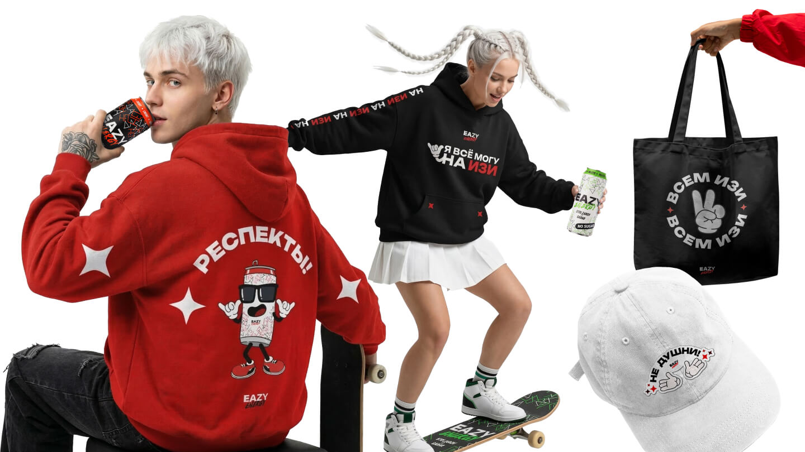
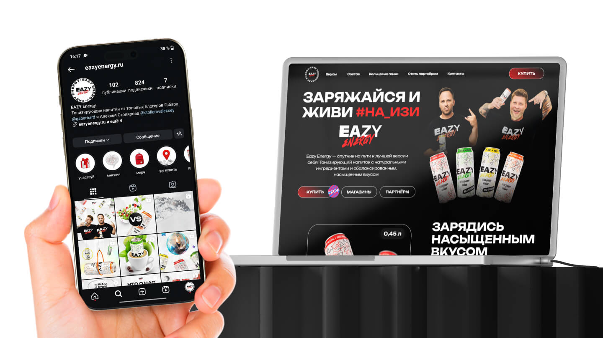
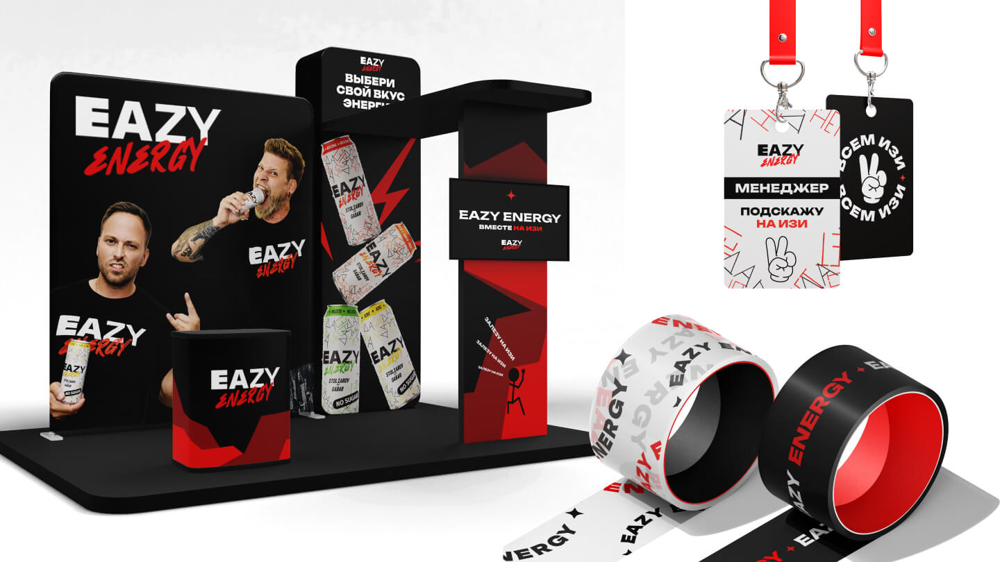
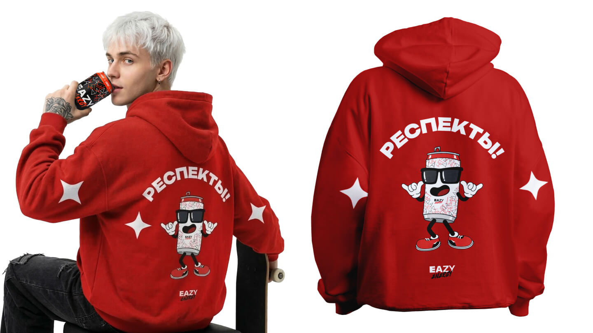
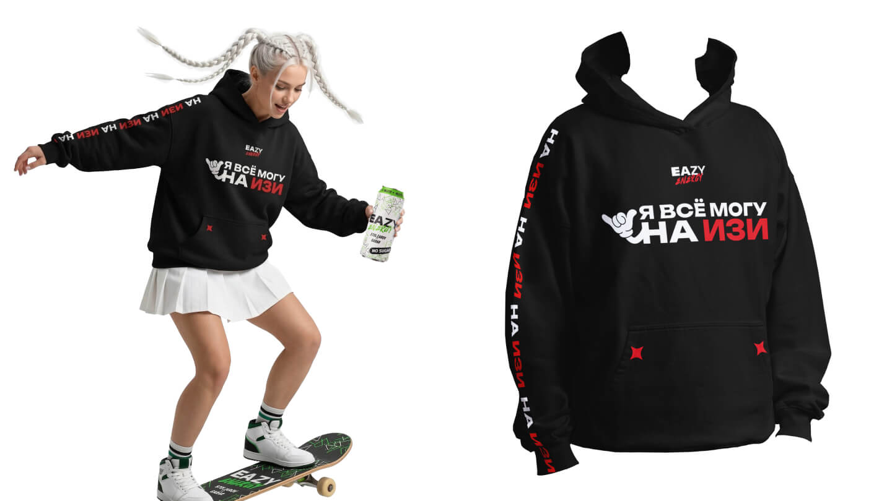
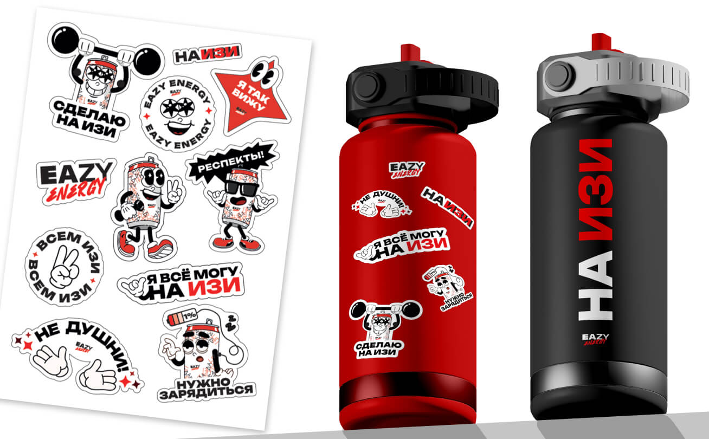
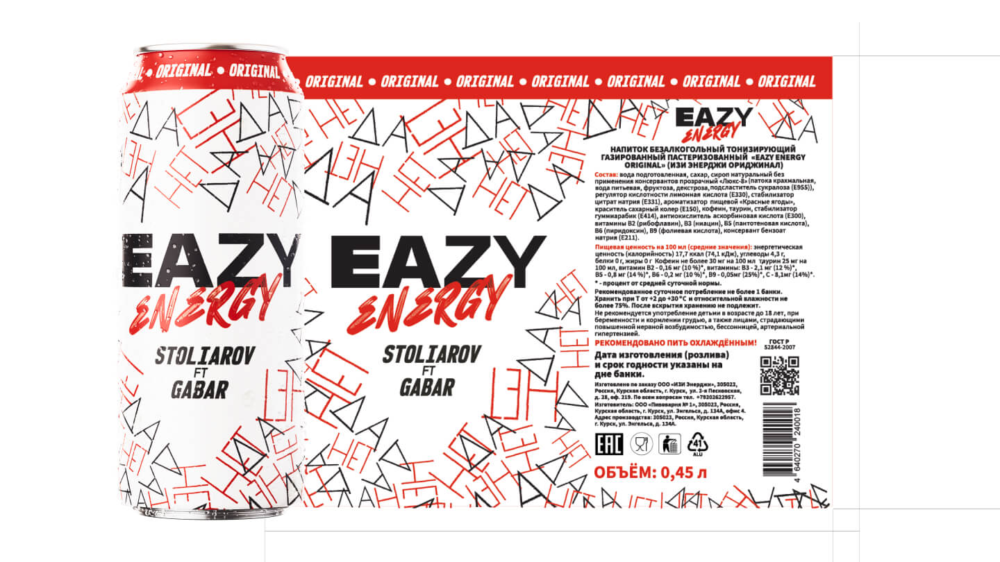

Eazy Energy
An energy drink brand built on the intersection of two things money can't buy: manufacturing capacity and genuine audience trust. I knew both sides from the inside. My job was to make sure the product looked and felt like it deserved to be on the shelf — and kept looking that way as the brand scaled.
Why
Eazy Energy was built on a specific equation: serious manufacturing infrastructure plus the combined audiences of two major Russian-speaking YouTubers. The product had a real foundation before a single can was designed. But a foundation isn't a brand. The audience — predominantly young men, 18–28, Russian-speaking — already had a relationship with the creators. The drink had to feel like a natural extension of that relationship, not a cash grab. I had spent four years inside Gabar's team. I knew the audience's analytics, their taste, what they'd respect and what they'd dismiss. That knowledge was the brief.
What
I led the creative direction across the full product lifecycle — from the first can design to the brand's national expansion. A graphic designer executed under my direction; I set the visual logic, reviewed every output, and course-corrected before anything went to approval. We designed the complete can system: the original template, material selection, CMYK finishing, and the visual logic that made each new flavour a coherent extension rather than a separate product. Beyond packaging: website, merch line, motion design for a 7-city tour in After Effects, and visual identity for racing sponsorships — car wrap, driver kit, event materials. Every touchpoint went through the same filter: does this feel native to the audience, or does it feel like branded merchandise?
How
The most important shift on this project was positional. Instead of being the hand, I became the eye. A designer working for hours on the same asset loses perspective — that's not a failure, it's physics. My role was to stay outside the frame: to see the whole product while the designer was inside the details, and to redirect before a wrong turn became a wrong direction. That distance is what kept the visual system coherent across two years of continuous output. The brand scaled, the product sold, the tour happened. When it eventually declined, the cause wasn't the product — it was the creators behind it. The design held up until the end.
What it looks like







What we delivered
One coherent visual system across all flavours
Tour motion design and visual identity — After Effects production
Continuous creative direction from launch through national distribution
From graphic execution to product-level creative direction — this project is where that happened
Launching a new product?
Tell me about the challenge — I'll tell you where to start.
Get in touch